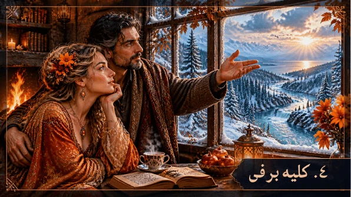
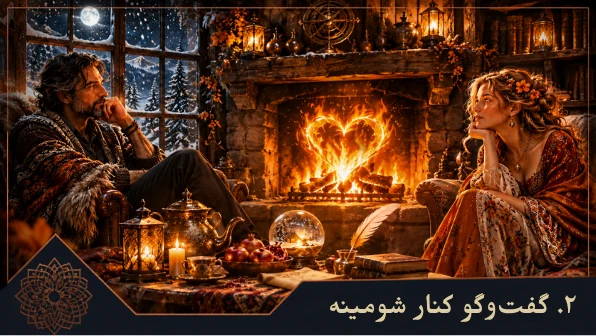

آنسوی شیشه

برف از نیمروز باریده بود. در پایابِ رود، مرد دو بار به خطا پای بر برفِ تازه گذاشت؛ هر دو بار آب از زیر پوستهٔ نازکِ یخ بالا زد و تا بندِ کفشش رسید. آن راه را سالها میان بریدنِ هیزم و بازگشت به کتابهایش پیموده بود و میدانست اگر از پیچ بعد بگذرد، باد آرام خواهد گرفت. در پیچ بعد باد آرام نگرفت. در عوض رشتهای دود دید که از جایی میان کاجها برمیخاست که دیروز در آن جز درخت ندیده بود.
راهِ اصلی را رها کرد. به پنجره که رسید، نخست تصویرِ خودش را در شیشه دید و پشت آن، زنی را دید که با انگشت بر صفحهٔ کتابی خطی را دنبال میکرد. زن بیآنکه سر بردارد، گفت:
«اگر میخواهید پشت در بمانید، دستکم یک گام به چپ بروید. برفِ آن گوشه از شیروانی میریزد.»
مرد یک گام به چپ رفت. مشتی برف درست همانجا فروافتاد که لحظهای پیش ایستاده بود.
«این نخستین سفارشیست که از اهل این خانه میشنوم. چنان بهموقع بود که از شنیدنِ دومی هم پرهیز نمیکنم.»
زن کتاب را بست و از درون چفت را گشود. برایش جا باز کرد، اما خود بر همان تختهای ماند که سایهٔ در از آن میگذشت. مرد تبر را به دیوار تکیه داد. آنگاه که از کنار زن گذشت، بوی چوبِ ترِ جامهاش با بوی غذایی که بر آتش بود درآمیخت. زن به میز نگاه کرد؛ دو بشقاب بر آن بود و هیچیک هنوز پر نشده بود.
«سفارش دوم این است: خود را گرم کنید، اما از آنچه من برای سفره پختهام نخورید.»
«همین قاعده برای همهٔ مهمانان است؟»
«اگر مهمانی از من میپرسید، همین را میگفتم.»
مرد از آن «اگر» درنگی شنید که در جمله نبود. بیش از این نپرسید.
زن درِ یخچال را گشود. پرتقالی برداشت و کنار چاقو گذاشت. پیش از آنکه در چفت شود، مرد چشمش به ردیف میوهها افتاد؛ جایِ پرتقالِ برداشتهشده خالی نبود. میتوانست از روشناییِ ناپایدارِ آتش باشد. زن در را با کف دست فشرد و گفت:
«وقتی از دَر حرف میزنیم، گمان میکنیم همهٔ درها برای رفتن ساخته شدهاند.»
مرد سر برداشت. زن از منقل میگفت یا از آستانه؟ دستش دیگر بر هیچ دری نبود.
عطر انبه و پوست لیمو

مرد از خورجینش کیسهٔ برگِ چای، برشهای خشکِ انبه و کاغذی تاخورده بیرون آورد که چند پوستِ لیمو در آن مانده بود. قمقمهاش هنوز از آبِ چشمهٔ پاییندست نیمهپر بود. زن به آنها نگریست؛ سپس قوریِ خالیِ روی رف را پایین آورد.
«از آنچه با خود آوردهاید، میتوانیم برای هر دو چای دم کنیم.»
«پس میانِ چای و شام فرقی هست.»
«چای از توشهٔ شماست. همین فرق، امشب کافیست.»
مرد آب را در قوری ریخت و زن برگها، انبه و پوستِ لیمو را به آن افزود. بخار که برخاست، مرد دیگر از تفاوتِ چای و شام نپرسید.
از پنجره، ماه پدیدار شد. ابر چنان از کنارِ آن میلغزید که گویی آسمان پیشانیِ ماه را به نرمی میبوسید. مرد که کنار آتش گرمش شده بود، دفترِ سفر را از جیب درآورد و بر گوشهٔ سفیدِ صفحهای دو سطر نوشت. هنوز مرکب خشک نشده بود که زن خواست آن را ببیند.
«آسمانا، بوسهٔ شبانهات بر ماه را دیدموعدهٔ این بهشت را خالی از عشاق دیدم»
«از این دو سطر هنوز غزل نساختهاید. اما به دادخواهی میماند: آسمانی که خود چنین بیپروا میبوسد، به چه حجت از اهل زمین حسابِ بوسه میخواهد؟»
«همین را میپرسم. آسمان را با مهرِ ماه و خورشید میستاییم و آنگاه وعدهٔ بهشتی میدهیم که گویی شرطِ درآمدن به آن، بریدن از لطیفترین عواطفِ ماست. دو جوان را زیر همین مهتاب تصور کنید. دستِ یکی از هیجانِ نخستین نزدیکی میلرزد، دیگری چشم میبندد؛ بوسه از سرِ محبت است، نه به قصدِ تصاحب و نه بیرضایت. چگونه میشود همان لحظه را سزاوار دوزخ دانست؟ اگر پروردگاری این توانِ دوستداشتن را در آدمی نهاده باشد، مگر دیدنِ آن مایهٔ شادیِ او نیست؟»
«آیا سخن از خواستِ آفریدگار است یا از سخنی که آدمیان به او نسبت دادهاند؟ تا این دو را جدا نکنیم شاید از کسی داد بخواهیم که سخن از او نیست.»
بانو فنجانِ انبه را به دو دست گرفت و افزود:
«در بعضی خوانشها حرمتِ آن بوسه را با حدودِ تعهد میسنجند؛ در خوانشی دیگر، رضایت، وفاداری، مسئولیت و بیآزاری ملاکِ داوریست. من نمیخواهم یکی را به جای همه بنشانم. اما پرسشم این است: اگر تنها دلیلِ ناروا دانستنِ آن بوسه حکمی باشد که اعتبارش را از پیش مسلم گرفتهایم، برای آنکس که هنوز میپرسد، چه دلیلی عرضه کردهایم؟»
«هیچ؛ تنها صورتِ پرسش را در لباسِ پاسخ به او بازگرداندهایم.»
مرد از کوچهای گفت که در شعری از فریدون مشیری، آدمی شبی مهتابی به آن بازمیگردد. بانو ماهِ آن شعر را شاهدِ خاطره دانست، نه داورِ عاشقان. پس از مکثی، پرسشی پیش کشید که مرد انتظارش را نداشت:
«آدمی خدا را از عشق آموخته است یا عشق را از خدا؟»
آنکه از خاک به آسمان رفت
«من راهِ نخست را محتمل میدانم. آدمی عاشق شد و آنچه در خویش مییافت از اندازهای که برای خود میشناخت بزرگتر بود. نمیخواست منشأ آن عظمت را در همین تنِ زمینی بجوید؛ پس در خیال، خدایی به بزرگیِ عشقِ خود ساخت. آنگاه هر بار که میخواست باور تازهای را در آن صورت بگنجاند، آن را بزرگتر و دورتر کرد، تا جایی که دیگر نه حدّی برای آن ماند و نه راهی برای آنکه آدمی به تمامی دریابدش.»
«در روایتِ معمول، خدا آدمی را میآفریند و عشق را در او مینهد؛ در فرضِ شما، آدمی عشق را در خود مییابد و از شکوهِ آن، تصوری از خدا میسازد. فرقِ این دو، فرقِ آغاز و پایان است. آیا منظورتان همین است؟»
«آری؛ و آنچه آغاز بود، بعدها نزدِ خودِ آدمی به فرع بدل شد.»
«فویرباخ میگفت آدمی آرزوها و کمالاتِ خود را در موجودی بیرون از خویش میبیند و آن را مستقل میپندارد. شما از یک خصلتِ معین آغاز میکنید: عشق. این فرض از آن رو شایستهٔ تأمل است که توضیح میدهد آدمی چرا چنین تصوری میسازد. اما سببِ پدیدآمدنِ یک باور با درست یا نادرست بودنِ آن یکی نیست. اگر دریابیم آدمی چرا به خدا باور آورد، آیا حق داریم بگوییم پاسخِ وجود یا عدمِ او را هم یافتهایم؟»
«نه. باید روشن بگویم که از خدای ساخته و پرداختهٔ تصورِ آدمی حرف میزنم؛ نه از هرچه ممکن است منشأ جهان باشد. بحثِ من از آنجا شروع میشود که آدمی در برابرِ ساختهٔ خویش کوچک شد.»
«و اگر از مرگ نمیترسید و راهی برای از دست دادنِ عزیزش نبود، آیا باز هم آن اندازه بر بزرگیِ آن تصور میافزود؟»
مرد فنجانِ گرم را میان دو دست گرفت. پوستهای لیمو در قوری نرم شده بودند. به آتش نگاه کرد و اینبار به جای آغاز کردن از استدلال، چهار سطر از دفترش خواند:
«خدا از عشق آمد و آسمانی شدبشر خدایی ساخت و زمینی شداین چه رسمیست در مکتبِ عشق؟وصال در عشق نیست و آسمانی شد»
«در سطرِ آخر آسمانیشدن از آنِ کیست؟ از آنِ عاشقی که به یار نمیرسد یا از آنِ وصالی که انسان از این جهان دریغ کرده و به جهانِ دیگری حواله داده است؟»
«هر دو تصویر را در نظر داشتم. آدمی چون به خدایی که تصور کرده بود عظمتِ نامتناهی بخشید، خود را در پایینترین مرتبهٔ آن نسبت نهاد: فانی در برابرِ جاوید. آنگاه برای جبرانِ این کوچکی، جهانی پس از مرگ تصور کرد؛ جایی برای بازگشت، پاداش و مجازات. در نگاهِ من، بسیاری حکمهای سلیقهای نیز به نامِ خدا به آن دستگاه راه یافت تا آفرینش و بازگشتِ آدمی توضیحی پیدا کند. و در سطرِ آخر، فرهاد را میدیدم؛ چنانکه آدمی نمیخواهد او و شیرین را در فرجامی عادی رها کند و از عشقی که به وصال نرسیده، افسانهای جاودان میسازد.»
«پس در هر دو حکایت، چیزی را آنقدر بالا میبریم که دیگر دستمان به آن نمیرسد. با این همه، آیا ناچاریم برای جاودانه کردنِ عشق، خوشبختیِ عاشقان را از حکایت بیرون بگذاریم؟»
فرهاد پس از بیستون
«اگر فرهاد به شیرین میرسید، چند روایت از اندیشهاش در تنهاییِ بیستون بر جای میماند؟ مجنون را در بیابان تصور کنید؛ چه بسیار سخن به او نسبت دادهاند که در آن خلوت، جز خودش شنوندهای نداشته است. آنجا که تکلیفِ چیزی روشن نیست، میشود ساعتها در بابِ آن سخن گفت و نه درستیاش را ثابت کرد و نه نادرستیاش را. آن سالهای طلباند که برای قصهگو مجال میگذارند؛ آنچه حل شده است، دیگر آن همه روایتِ انتظار برنمیتابد.»
«این را دربارهٔ انتظار میپذیرم، نه دربارهٔ عشق. اگر شیرین به فرهاد میرسید، کوهکندن دیگر قصهٔ فردای آنان نبود. اما کنارِ هم پیرشدن قصهای دیگر بود. آیا از آن رو که کمتر برایش افسانه سرودهایم، از عشقِ فرهاد کم میکرد؟»
مرد فنجان را بر میز گذاشت و با سرِ انگشت، دو جایِ جدا را روی چوب نشان داد.
«یکی جایِ عشق باشد و دیگری جایِ حکایتی که از آن میسازند. سخنم در اینجا از دومیست. خودِ عشق چهبسا پس از رسیدن آغازِ دیگری داشته باشد؛ اما آن قصهای که از نرسیدن نیرو میگرفت، پایان یافته است.»
«پس دیگر با شما بر سرِ فرهاد ستیزی ندارم: وصال پایانِ تعلیق است، نه حکمِ پایانِ عشق.»
بانو هیزمی به آتش افزود. شعله بالا گرفت و دوباره نشست. سخن که به درازا کشید، قوری آخرین گرمایش را به دستِ زن سپرد.
«از همین منظر به روایتِ کرامات هم بنگرید. از تولدِ عیسی بیپدر میگویند؛ از شکافتنِ دیوارِ کعبه در روایتِ ولادتِ علی و از شقالقمر در سنتِ اسلامی. نمیگویم اینها همه از یک جنساند. میگویم در برخی محیطها، بزرگیِ ادعا به جای آنکه تحقیق را ضروریتر کند، همراه با هالهٔ تقدس پرسیدن را دشوارتر میسازد. هر قدر میدانِ آزمون تنگتر، میدانِ قصه فراختر.»
«در این اندازه همراهتان هستم. اما پیشتر، بزرگیِ ادعا را دلیلِ آسانتر بودنِ پذیرش دانستید؛ من آن را لازم نمیبینم. دستگاهی که به شواهد بها بدهد، برای ادعای شگفتتر دلیلِ محکمتر میخواهد. و اینکه نقلی آزموده نشده، به ما نمیگوید همهٔ ناقلانش به عمد دروغ گفتهاند. باورِ ایمانی، روایتِ تاریخی و ادعای آزمونپذیر سه چیزند؛ اگر مرزشان را گم کنیم، نه به حقیقت نزدیک میشویم نه به انصاف.»
«مرزِ دیگری هم هست. فرهاد در پیِ کسی بود که میتوانست او را ببیند و عارف سالها در طلبِ معبودی میماند که راهِ مستقلِ اثباتِ وصالش روشن نیست. شبزندهداری و ریاضت، در هر حکایت طولِ راه را بیشتر میکند. پس از آن، برای بزرگیِ سالک از هر کرامتی حکایت میبافند؛ حتی از کفشی که خود پیشِ پای صاحبش جفت میشد.»
«شاید کسی بهراستی در خلوتش آرامش یا یگانگیِ عمیقی یافته باشد. نه لازم است آن تجربه را از او بگیریم، نه لازم است از آن نتیجه بگیریم کفش خود به خود جفت شده است. تجربه از آنِ اوست؛ دعویِ کرامت را باید جداگانه سنجید. و حالا همان پرسشِ فرهاد را از سویِ دیگر میپرسم: اگر وصال این بار آزمونپذیر شود و خدای ادیان را بتوان شناخت، چه بر سرِ قصهٔ طلب و اقتدارِ آنان میآید که راه را منحصر به خود میدانند؟»
ماه و ابر

بانوی آتش آبِ باقیماندهٔ قمقمه را بر برگِ تازه ریخت و اندکی بهارنارنج از کیسهٔ مرد در قوری انداخت. عطرِ تازه با اندک بویِ انبه درهم آمیخت. مرد نگاه از ابر برنگرفت؛ ماه هر بار از شکافی باریک پیدا میشد و باز میپوشید.
«اگر خدایِ معینِ ادیان، نه خالقی در معنایی نامعین، به اثبات برسد و راهِ گفتوگوی بیواسطه با او کشف شود، بسیاری از دکانهایی که از نادانی و راز سود میبرند بسته خواهد شد. آنوقت هرکس میتواند بپرسد: آیا خدا چنین گفته یا فلان کس از جانبِ او سخن گفته است؟ اکنون یکی وعدهٔ پاداش میدهد و دیگری از کیفر میترساند، و در این میان همان بوسهٔ زیرِ ماه محکوم میشود. از نگاهِ من، این ناسازگاری در تصورهای رایج از خدا و بهشت و دوزخ آشکار است. معما چو حل گردد آسان شود؛ سودِ بعضی از این میانجیان نیز در آن است که حل هرگز از راه نرسد. چهبسا رمزی هم در کار نباشد.»
«اگر دسترسی بیواسطه ممکن شود، انحصارِ ادعا سست خواهد شد؛ این را میپذیرم. اما آیا میلِ آدمی به قدرت هم با کشفِ آن راه از میان میرود؟ شاید این بار بر سرِ معنایِ سخن اختلاف کنند، نه بر سرِ اینکه سخنی رسیده است یا نه.»
«قدرت به این آسانی میدان خالی نمیکند. اگر راهِ آزمودن باشد، دستکم پاسخ را نمیتوان تا ابد پشتِ تقدس پنهان داشت. علم نیز تا امروز به بعضی پرسشهایی که پاسخِ آیینی برای آنها قطعی مینمود، جوابِ دیگری داده است. آن قطعیت مانند ابریست برابرِ ماه؛ ماه اما همیشه پشتِ ابر نمیماند.»
بانو دفتر را به سوی خود کشید. در کنارِ سطرهایِ مرد جا اندک بود. نه در پیِ قافیه گشت و نه چیزی را که نوشته بود غزل خواند؛ تنها چهار سطر زیرِ تاریخِ آن شب گذاشت و دفتر را آنسو گرداند:
«ماه، از پسِ ابر بازخواهد آمد؛اما دستی که از بیم پس کشیدیمهمان دست استاگر هنوز کسی چشمبهراهِ ما باشد.»
مرد سطرِ آخر را دوباره خواند. از ماه سخن گفته بود و زن، بیآنکه ماه را از دفترش بردارد، سخن را به کسی بازگردانده بود که در تاریکی مانده است.
مرد چایِ دوم را چشید. آنگاه به خطِ روشنِ آتش نگاه کرد که تا نوکِ هیزم میدوید.
«زیباییِ همین آتش برای من از جنسِ عشق است. لحظهای را به سببِ غریزه، تربیت، عادت، آنچه آموختهایم یا آنچه در سرشتِ ماست زیبا مییابیم و با آن پیوند میگیریم. عشق نیز با شیمیِ تن، هورمونها و کارِ مغز بیگانه نیست. چشمِ من از دانستنِ این سخن بر آتش بسته نمیشود. روزی علم از این دست پرسشها بسیار بیش از امروز پاسخ خواهد داد.»
«میتوان گفت دوپامین و اکسیتوسین و حافظه و آموختههای ما در دلبستگی سهم دارند. میتوان دانست که رنگِ آتش از کجا میآید و آوا چگونه از ارتعاش به گوش میرسد. دانستنِ هیچیک مرا از شنیدنِ موسیقی یا از تماشای شومینه محروم نمیکند. آنچه میخواهم جدا کنم، سازوکارِ یک تجربه از معناییست که آدمی به آن میدهد. برای نگاهداشتنِ آن معنا هم الزاماً نیازی به ماورا ندارم.»
«در نظرِ من، پرستش شاخهای از عشق است، نه درختی برتر از آن. فرقههایی آن را چنان مینمایانند که گویی عشق جز با پرستش به کمال نمیرسد.»
«و من هنوز میپرسم: آیا هر پرستشی از عشق میروید؟ خوف، امیدِ پاداش، عادت و نیاز نیز میتوانند آدمی را به پرستش کشانند؛ همانگونه که حسد و میلِ تصاحب میتوانند در لباسِ عشق پدیدار شوند. به جایِ نامها، باید دید اختیار و رضایت و مسئولیتِ دیگری در این پیوند چه اندازه حرمت دارد.»
مرد پاسخی فوری نداد. فنجانش را برداشت؛ بانو این بار پرسش را به بوسهٔ آغازِ شب بازگرداند:
«اگر برای اخلاقِ آن بوسه دلیلی جز حکمِ پیشاپیش پذیرفتهشده نداشته باشیم، به کدام حرمتِ انسانی استناد میکنیم؟ و اگر آدمی بداند پس از این زندگی نه پاداشی هست و نه کیفری، به گمانِ شما مهربانتر میشود یا خودخواهتر؟»
خدا و آدمی، در یک شب
«بیمِ من این است که خودخواهتر شود. این را قانونِ آدمیان نمیدانم؛ بیمیست از آنکه آزادی به دستِ کسی بیفتد که هنوز راهِ حرمتِ دیگران را نیاموخته است. گمان بردهام شاید کسانی هم به پاسخهایی در این باب رسیده و برای آرامشِ دیگران خاموش ماندهاند. نمیدانم چنین کسی بوده است یا نه. میدانم دانایی اگر آدمی را بلندنظرتر نکند، به خودیِ خود خیرِ بشر نیست. آنچه برای آینده میخواهم ایمان است؛ اما ایمان به همنوع، نه خریدنِ پاداش.»
«در بیمِ شما شریکم، نه در آن نتیجه که نبودِ آخرت ناگزیر آدمی را خودخواه میکند. کسی میتواند به پاداش معتقد باشد و حقِ همسایه را بخورد؛ کسی هم میتواند از آخرت هیچ نداند و رنجِ دیگری را رنجِ خود بشناسد. عکسِ هر دو هم ممکن است. میان دانستنِ یک حقیقت و آماده بودن برای زیستن با آن فاصلهایست. این فاصله با خاموشکردنِ همیشگیِ پرسش پُر نمیشود.»
مرد انگشت بر لبهٔ فنجان کشید. از کتابی که زن پیش از گشودنِ در میخواند پرسید. بانو آن را از کنار پنجره برداشت و گشود. مرد از روی صفحه خم شد و سه بیت را به آهستگی خواند:
بنیآدم اعضای یکدیگرندکه در آفرینش ز یک گوهرندچو عضوی به درد آورد روزگاردگر عضوها را نماند قرارتو کز محنت دیگران بیغمینشاید که نامت نهند آدمی
سعدی، گلستان، باب اول، حکایت ۱۰
«سعدی نمیگوید اگر از رنجِ دیگری بیغمی، به دوزخ خواهی رفت. میگوید نشاید که نامت نهند آدمی. و سعدی خود در جهانی دینی میزیست؛ پس شعرش نه گواهِ ناممکن بودنِ این اخلاق در دین است، نه خواننده را وامیدارد که برای فهمیدنِ آن ابتدا آیینی معین بپذیرد.»
«من امید ندارم که دعویهای دینیِ هر روز پررنگتر، بهخودیخود بشر را به آنجا برسانند. اما آنچه میگویی، سخنِ مرا هم تیزتر میکند: نیکیِ من نباید در گرو آن باشد که ناظری وعدهٔ مزد بدهد. آنکه رنج میبرد، پیش از تمامِ گفتوگوهای من دربارهٔ ایمان، به دستِ یاری نیاز دارد.»
«و ایمان به آدمی اگر فقط نامی تازه باشد، از نامهای کهنه کاری بیش نخواهد کرد؛ باید در پروردنِ وجدان، عدالت و آزادیِ گفتوگو اثرش را دید.»
مرد سر به تأیید فرود آورد، نه چنانکه کسی میپذیرد بحث پایان یافته است؛ چنانکه کسی جای قدمِ بعدی را میبیند. بانو کتاب را نبست.
«پس شاید فردا بتوان از پرسشی آغاز کرد که امشب هنوز پاسخش را ندادهایم: برای کاستن از رنجِ یک تنِ دیگر، چه میتوان کرد؟»
«این پرسش را از هر پاسخِ نهایی بیشتر به یاد خواهم داشت.»
بازگشت از آستانه
مرد به اتاق که نگاه کرد، دریافت بخارِ ظرفِ شام فرونشسته و دستِ بانو هنوز نزدیکِ کتاب است. زن پیش از آنکه برخیزد، ظرفِ دستنخوردهٔ او را برداشت. لحظهای خواست چیزی بگوید، اما به جای آن دو فنجان را به هم نزدیک کرد. یکی هنوز بوی انبه داشت و دیگری بوی بهارنارنج. همانجا بر طاقچه ماندند.
«آتش تا صبح به هیزم نیاز دارد. تبرم بیرون مانده است.»
«از پشتِ پنجره پیداست. آن را همانجا خواهید یافت.»
زن تا آستانه آمد و دیگر پیش نرفت. بیرون ماه از آخرین ابر بالا آمده بود. مرد گامی به برف نهاد و برگشت. در نورِ شومینه، نیمهٔ صورتِ زن پیدا بود؛ کتاب را گشوده بر کفِ دست نگاه داشته بود.
مرد از مبدأ خیال به مقصد زندگی قدم گذاشته بود، اگرچه برای آن شب فاصلهٔ این دو بیش از چند گام در برف نبود. هیزم را آورد و کنارِ آتش گذاشت. نه از زن پرسید چرا بر آستانه مانده بود، نه زن گفت چرا پیش از برداشتن ظرف، بارِ دوم به آن نگریسته بود. ساعتی بعد، وقتی مرد کنارِ شومینه چشم بست، در قوری هنوز اندکی عطر مانده بود و برف، ردِ گامهایِ آمده و بازگشتهٔ او را از یاد میبرد.